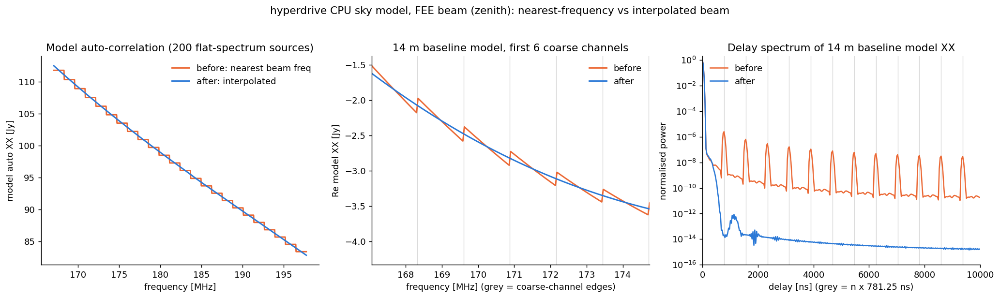

Beam responses
Beam responses are given by
mwa_hyperbeam. At present,
only MWA beam code is used.
To function, MWA beam code needs a few things:
- The dipole delays;
- The dipole gains (usually dead dipoles are 0, others are 1);
- The direction we want the beam response as an Azimuth-Elevation coordinate; and
- A frequency.
In addition, the FEE beam code needs an HDF5 file to function. See the post-installation instructions for information on getting that set up.
It is possible to use the "analytic" MWA beam, and this does not require an
additional file (but the FEE beam is the default selection). There are two
"flavours": mwa_pb and RTS, and these can be used by specifying --beam-type analytic-mwa_pb (alias mwa_pb) and --beam-type analytic-rts (alias rts),
respectively (beam type names are case-insensitive). The differences
between the flavours is not huge, but I (CHJ) suggest the RTS flavour if in
doubt, as it seems to look a little better.
Frequency resolution
The FEE beam's coefficients are only defined at multiples of 1.28 MHz (the MWA
coarse-channel width, i.e. at coarse-channel centres). When modelling
visibilities, FEE beam responses are computed at the file frequencies spanning
the fine channels (from the one at or below the lowest channel to the one at or
above the highest), and each fine channel's response is interpolated from them
with a not-a-knot cubic spline through the real and imaginary parts of each
Jones element. This is the same interpolation scheme used to make the 10 kHz
FEE file MWA_embedded_element_pattern_rev2_interp_167_197MHz.h5 (a not-a-knot
cubic spline through each spherical-wave coefficient, with knots spanning the
band). The two are not identical, though: hyperdrive splines the
zenith-normalised responses, whereas the dense file normalises after splining
the coefficients, and the normalisation is not linear in frequency. The
difference is about 1e-6 near zenith and 1e-4 at 25° elevation, and both
suppress the coarse-channel harmonics equally.
The analytic beams are defined at any frequency, but they are splined the same way from knots on the 1.28 MHz grid (with two extra knots beyond each end of the band), because the modellers' beam-response arrays scale with the number of knots; evaluating at every fine channel would need 32 times the memory for 40 kHz channels. The beam is smooth enough that the spline is within ~1e-6 of the beam evaluated at each channel. Likewise, if a beam file sampled more finely than 1.28 MHz is used, knots at least 1.28 MHz apart are chosen from it.
Fine channels outside the beam file's frequency range use the beam at the file's first or last frequency (a warning is logged); the beam is not extrapolated.
(Previously, every fine channel used the beam response at the nearest multiple of 1.28 MHz, for both beam types, so the beam, and with it the sky model and calibration solutions, was constant within each coarse channel and stepped at every coarse-channel edge. Those 1.28 MHz-periodic steps put power at multiples of 781.25 ns in delay space.)

Errors
Beam code usually does not error, but if it does it's likely because:
- There aren't exactly 16 dipole delays;
- There aren't exactly 16 or 32 dipole gains per tile; or
- There's something wrong with the FEE HDF5 file. The official file is well tested.